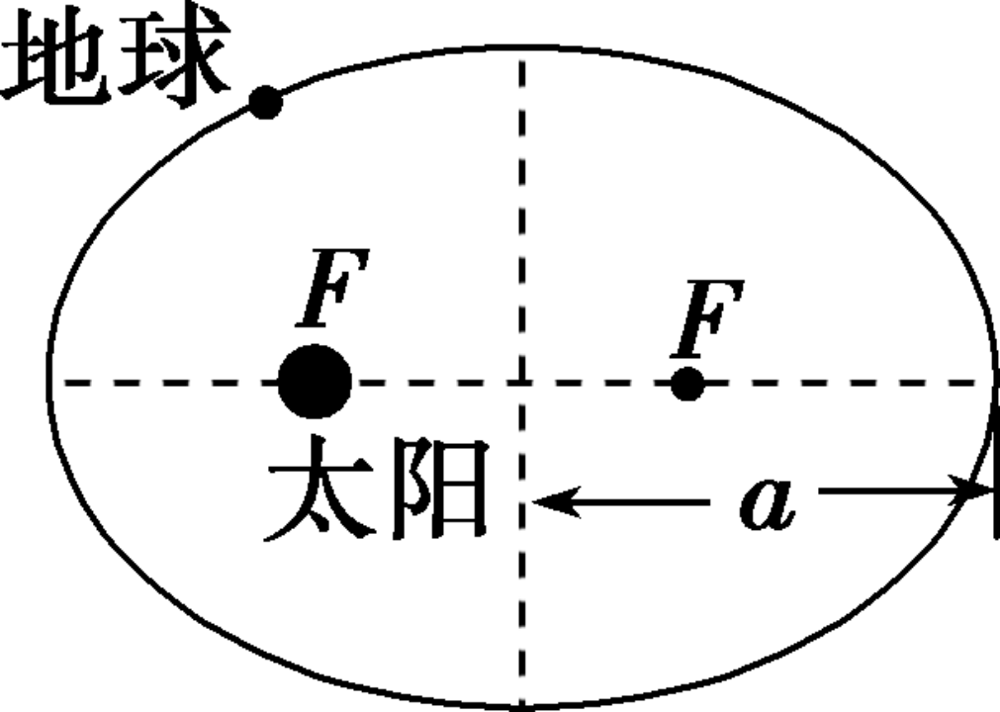
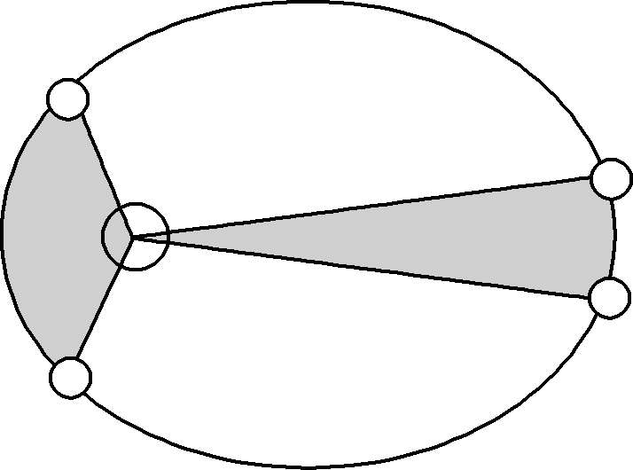
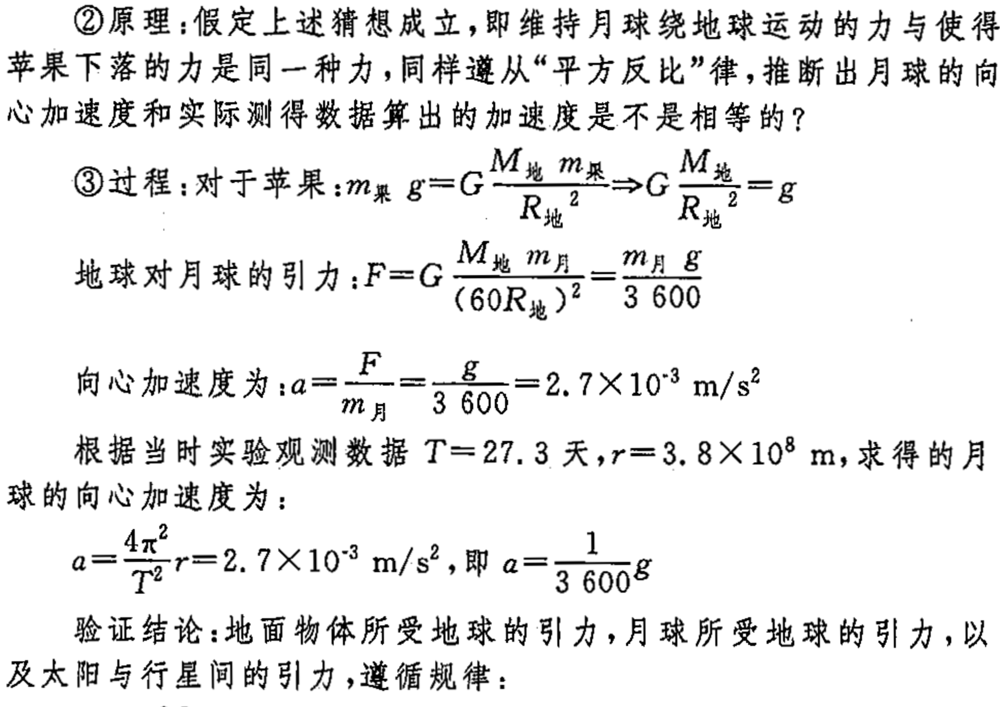
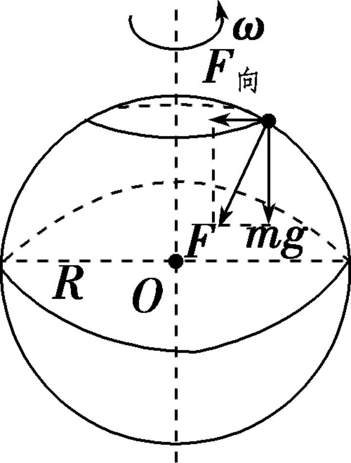
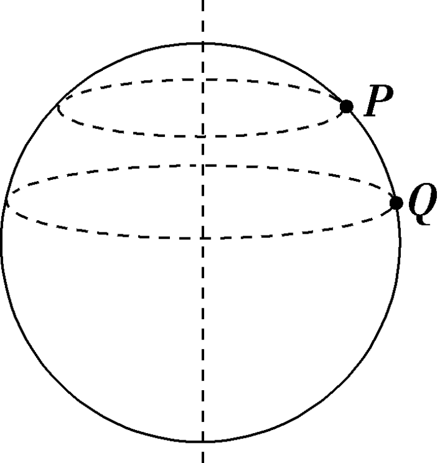

学考13-万有引力与宇宙航行
开普勒行星运动定律
第一定律 (轨道定律)：所有的行星围绕太阳运动的轨道是椭圆，太阳处在椭圆的一个焦点上
第二定律 (面积定律)：对任意一个行星来说，它与太阳的连线在相等的时间内扫过相等的面积。


\frac{a^{3}}{T^{2}}=k
其中 k 只与中心天体有关
第三定律 (周期定律)：所有行星的轨道的半长轴 a 的三次方跟它的公转周期 T 的二次方的比值都相等
练习
为了探测引力波，“天琴计划”预计发射地球卫星 P，它离地球表面的距离约为地球半径的 15 倍；另一地球卫星 Q 的轨道半径约为地球半径的 4 倍，P 与 Q 的角速度之比约为 1:8
万有引力定律及其应用
万有引力定律
- 公式：F=G\frac{Mm}{r^{2}}
- 适用条件(满足其一)：
- 适用于两个质点间引力大小的计算，若两个物体间的距离远大于物体本身大小时，两个物体可近似看成质点。
- 质量分布均匀的两个球体，可视为质量集中于球心。
月球与地球之间的力和使苹果下落的力是同一种力吗？怎么证明。

- 德国天文学家开普勒提出天体运动的开普勒三大定律。
- 牛顿总结了前人的科研成果，在此基础上，经过研究得出了万有引力定律。
- 英国物理学家卡文迪什利用扭秤实验装置比较准确地测出了引力常量的数值。
万有引力与重力的关系
地球对物体的万有引力 F 表现为两个效果：一是重力 mg，二是提供物体随地球自转的向心力 F_{向}，如图所示。
- 在赤道上：G\frac{Mm}{R^{2}}=mg_{1}+m\omega^{2}R
- 在两极：G\frac{Mm}{R^{2}}=mg_{2}
- 在一般位置：万有引力 G\frac{Mm}{R^{2}} 等于重力 mg 与向心力 F_{向} 的矢量和。越靠近南北两极 g 值越大，由于物体随地球自转所需的向心力较小，常认为万有引力近似等于重力，即 G\frac{Mm}{R^{2}}=mg。

练习
如图所示，P、Q 为质量相同的两质点，分别置于地球表面的不同纬度上，如果把地球看成一个均匀球体，P、Q 两质点随地球自转做匀速圆周运动，则下列说法正确的是 ( B )
A. P、Q 做圆周运动的向心力大小相等
B. P、Q 所受地球引力大小相等
C. P、Q 做圆周运动的线速度大小相等
D. P 所受地球引力大于 Q 所受地球引力

练习
已知地球半径为 R，地球表面的重力加速度为 g，引力常量为 G，不考虑地球自转的影响，根据上述各量可以推算出地球的质量为 \frac{gR^{2}}{G}
若忽略地球自转，认为地球表面物体的重力等于它受到的万有引力，mg＝ \frac{GMm}{R^{2}}，解得 M＝\frac{gR^{2}}{G}
练习
假设某星球和地球都是球体，该星球的质量是地球质量的 2 倍，该星球的半径是地球半径的 3 倍，那么该星球表面的重力加速度与地球表面处的重力加速度之比为 2:9
\begin{aligned} &mg=G\frac{Mm}{R^{2}} \\ \Rightarrow &g=\frac{Gm}{R^{2}} \\ \Rightarrow &\frac{g_{星}}{g_{地}}=\frac{\frac{m_{星}}{m_{地}}}{\left( \frac{R_{星}}{R_{地}} \right)^{2}}=\frac{2}{9} \end{aligned}
宇宙航行
宇宙速度
| 宇宙速度 | 大小和特点 |
|---|---|
| 第一宇宙速度 (环绕速度) |
v_{1}=7.9\;\mathrm{km/s}，是人造卫星在地面附近绕地球做匀速圆周运动的速度，既是最小发射速度，也是最大环绕速度 |
| 第二宇宙速度 (脱离速度) |
v_{2}=11.2\; \mathrm{km/s}，物体挣脱地球引力束缚的最小发射速度 |
| 第三宇宙速度 (逃逸速度) |
v_{3}=16.7\; \mathrm{km/s}，物体挣脱太阳引力束缚的最小发射速度 |
- 万有引力提供向心力 G\frac{Mm}{R^{2}}=m\frac{v^{2}}{R}\Rightarrow v=\sqrt{\frac{GM}{R}}
- 重力提供向心力 mg=m\frac{v^{2}}{R}\Rightarrow v=\sqrt{ gR }
练习
从地球上最高的山峰上将物体水平抛出，速度越大，落地点就越远。如果抛出的速度足够大，物体就不再落回地面，它将绕地球运动，成为一颗人造地球卫星。当卫星沿外层椭圆轨道运行时，它的发射速度应该是 ( D )
A. 第一宇宙速度
B. 第二宇宙速度
C. 第三宇宙速度
D. 大小介于第一宇宙速度和第二宇宙速度之间
练习
我国“天问一号”火星探测器成功实现环绕火星运行，并着陆火星。火星的半径是地球的 n 倍，火星的质量为地球的 k 倍，不考虑行星自转的影响，求：
- 火星表面的重力加速度是地球的几倍？
- 火星的第一宇宙速度是地球的几倍？
第 1 问
\begin{aligned} mg=G\frac{Mm}{R^{2}}\Rightarrow g=\frac{GM}{R^{2}} \\ \frac{g'}{g}=\frac{\frac{M'}{M}}{\left( \frac{R'}{R} \right)^{2}}=\frac{k}{n^{2}} \end{aligned}
第 2 问
\begin{aligned} mg=m\frac{v^{2}}{R}\Rightarrow v=\sqrt{ gR } \\ \frac{v'}{v}=\sqrt{ \frac{g'}{g}\frac{R'}{R} }=\sqrt{ \frac{k}{n} } \end{aligned}
卫星的运动规律
G\frac{Mm}{r^{2}}= \begin{cases} m\frac{v^{2}}{r} & \Rightarrow v=\sqrt{\frac{GM}{r}}\\ m\omega^{2}r & \Rightarrow\omega=\sqrt{\frac{GM}{r^{3}}}\\ m\left(\frac{2\pi}{T}\right)^{2}r & \Rightarrow T=2\pi\sqrt{\frac{r^{3}}{GM}}\\ ma & \Rightarrow a=\frac{GM}{r^{2}} \end{cases}
r 越大，v 、\omega、a_{n} 越小，T 越大
- 近地轨道与最大环绕速度：轨道半径 r 最小时，线速度 v 最大，飞行器在近地轨道上达到最大环绕速度；
- 符号规范：从这一节开始，物理量的数量就大幅增加了，这里介绍一下约定俗成的符号用法——中心天体半径用 R，环绕天体转动半径用 r，近地轨道 r=R；
- 总结：围绕天体的运动问题都可以在这个大框架下解决，定性问题直接套口诀，定量问题找对应关系式。
- 近地卫星：r\approx R
- 地球同步卫星 (新版教材中等同于静止卫星)：T=1\;\mathrm{day}
练习
我国“北斗卫星导航系统”由 5 颗静止轨道卫星和 30 颗非静止轨道卫星组成，卫星轨道为圆形，半径大小不同，其运行速度、周期等参量也不相同，下面说法正确的是 ( B )
A. 卫星轨道半径越大，周期越小
B. 卫星轨道半径越大，线速度越小
C. 卫星轨道半径越大，向心加速度越大
D. 卫星轨道半径越大，运动的角速度越大
练习
我国发射的某颗绕月运行的探月卫星的轨道是圆形的，且贴近月球表面。已知月球的质量约为地球质量的 \frac{1}{81}，月球的半径约为地球半径的 \frac{1}{4}，地球上的第一宇宙速度约为 v_{1}，则该探月卫星绕月运行的速率为
用已知物理量 M、R 表示出目标物理量v
\begin{aligned} v&=\sqrt{ \frac{GM}{R} } \\ \Rightarrow \frac{v_{月}}{v_{地}}&=\sqrt{ \frac{\frac{M_{月}}{M_{地}}}{\frac{R_{月}}{R_{地}}} }=\sqrt{ \frac{\frac{1}{81}}{\frac{1}{4}} }=\frac{2}{9} \end{aligned}